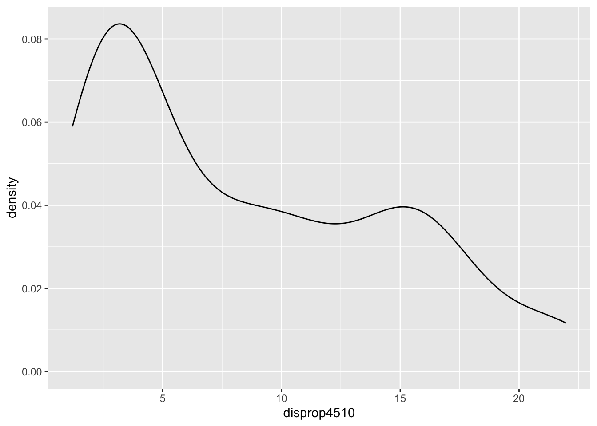

Politikwissenschaftliche Statistik mit R. Sitzung 14: Lösungen zu den Aufgaben
Christoph Garwe, Philipp Meyer, Laura Brune und Christoph Hönnige
Institut für Politikwissenschaft, Leibniz Universität Hannover1. Sitzung: Einleitung und Grundlagen von R
1.1 Aufgaben
Installieren Sie
RundR Studiowie unter 2. beschrieben. Führen Sie die Code-Chunks aus 2. aus.Erstellen Sie zwei numerische Vektoren, die je fünf beliebige Werte beinhalten. Summieren Sie die Vektoren und multiplizieren Sie sie miteinander. Bilden Sie einen weiteren Vektor, indem Sie die beiden Vektoren miteinander kombinieren.
Erstellen Sie einen character-Vektor, der die Buchstaben des Alphabets beinhaltet. Bilden Sie einen zweiten character-Vektor, der als Subset des ersten nur die Konsonanten beinhaltet.
1.2 Lösungen
a <- 1:5
b <- 6:10
a + b## [1] 7 9 11 13 15a * b## [1] 6 14 24 36 50c <- c(a, b)alphabet <- c("a", "b", "c", "d", "e", "f", "g", "h", "i", "j", "k", "l", "m", "n", "o", "p", "q", "r", "s", "t", "u", "v", "w", "x", "y", "z")
konsonanten <- alphabet[alphabet != "a" & alphabet != "e" & alphabet != "i" &
alphabet != "o" & alphabet != "u"]
konsonanten## [1] "b" "c" "d" "f" "g" "h" "j" "k" "l" "m" "n" "p" "q" "r" "s" "t" "v" "w" "x"
## [20] "y" "z"2. Sitzung: Faktoren und zweidimensionale Objekte in R
2.1 Aufgaben
Erstellen Sie zwei Matrizen, die beliebige zwölf Werte beinhalten: a) mit drei Zeilen und Spalte für Spalte mit Werten versehen; b) mit zwei Spalten und Zeile für Zeile mit Werten versehen. Schreiben Sie effizienten Code, indem Sie jeweils nur die notwendigen Argumente erwähnen.
Erstellen Sie einen character-Vektor “p”, der die Namen der im 19. Deutschen Bundestag vertretenen Parteien enthält. Ordnen Sie den Vektor nach dem Mandatsanteil der Parteien beginnend mit dem größten Anteil. Erstellen Sie außerdem einen numerischen Vektor “a”, der die Mandatsanteile (gerundet auf eine Nachkommastelle) der Parteien enthält. Orientieren Sie sich an der Ordnung von “p”. Erstellen Sie eine Matrix, indem Sie beide Vektoren als Spalten verbinden. Inspizieren Sie die erstellte Matrix. Information finden Sie hier: https://www.bundestag.de/resource/blob/196106/b4daa14a76f53a3d58892a6373259a9d/Kapitel_01_16_Stimmenanteil_-_Mandatsanteil-data.pdf
Wandeln Sie die unter 2. erstellte Matrix in einen Dataframe um. Prüfen Sie die Klasse der beiden Variablen des Dataframe. wandeln Sie sie ggf. in ein angemessenes Datenformat um. Geben Sie beiden Variablen sinnvolle Namen.
Erstellen Sie Subsets für die folgenden potenziellen Koalitionen und speichern Sie sie in Objekten mit den angegbenen Namen: CDU/CSU-SPD -> “groko”, CDU/CSU-FDP-Grüne -> “jamaika”. Summieren Sie jeweils den Mandatsanteil der möglichen Koalitionen (Tipp: im Tutorial zu Sitzung 1 finden Sie die entsprechende Funktion für das Summieren).
Erstellen Sie ein Subset aller Parteien, die mehr als 10 Prozent der Mandate auf sich vereinigen. Erstellen Sie dieses Subset einmal mithilfe eckiger Klammern und einmal mithilfe der Funktion
subset(). Erstellen Sie außerdem ein Subset mit allen Parteien, die weniger Mandate auf sich vereinigen als die SPD. (Tipp: für Letzteres benötigen Sie einen logischen Vektor, selbst wenn Siesubset()verwenden.)Erstellen Sie einen Faktor mit den Kategorien “Handy”, “Tablet”, “Laptop”, “PC”. Handys sollen zweimal, Tablets viermal, Laptops dreimal und PCs fünfmal vorkommen. Ordnen Sie den Faktor nach der Größe der Geräte von klein nach groß. Lassen Sie sich die
table()und diesummary()des Faktors ausgeben. Wandeln Sie den Faktor in einen numeric-Vektor um. Lassen Sie sich dietable()und diesummary()des Vektors ausgeben. Was hat sich im Output dieser Funktionen verändert?
2.2 Lösungen
matrix(data = 10:21, nrow = 3)## [,1] [,2] [,3] [,4]
## [1,] 10 13 16 19
## [2,] 11 14 17 20
## [3,] 12 15 18 21matrix(data = 10:21, ncol = 2, byrow = TRUE)## [,1] [,2]
## [1,] 10 11
## [2,] 12 13
## [3,] 14 15
## [4,] 16 17
## [5,] 18 19
## [6,] 20 21oder:
matrix(data = 10:21, nrow = 6, byrow = TRUE)## [,1] [,2]
## [1,] 10 11
## [2,] 12 13
## [3,] 14 15
## [4,] 16 17
## [5,] 18 19
## [6,] 20 21- (möglicherweise aktualisiert)
p <- c("CDU/CSU", "SPD", "AfD", "FDP", "Linke", "Grüne")
a <- c(32.9, 20.5, 12.6, 10.7, 9.2, 8.9)
pa <- cbind(p, a)padf <- as.data.frame(pa)
class(padf$p)## [1] "character"class(padf$a)## [1] "character"padf$a <- as.numeric(padf$a)
padf## p a
## 1 CDU/CSU 32.9
## 2 SPD 20.5
## 3 AfD 12.6
## 4 FDP 10.7
## 5 Linke 9.2
## 6 Grüne 8.9names(padf)[1] <- "parteien"
names(padf)[2] <- "anteile"
padf## parteien anteile
## 1 CDU/CSU 32.9
## 2 SPD 20.5
## 3 AfD 12.6
## 4 FDP 10.7
## 5 Linke 9.2
## 6 Grüne 8.9groko <- subset(padf, subset = parteien == "CDU/CSU" | parteien == "SPD")
sum(groko$anteile)## [1] 53.4jamaika <- subset(padf, subset = parteien == "CDU/CSU" | parteien == "Grüne" |
parteien == "FDP")
sum(jamaika$anteile)## [1] 52.5padf[padf$anteile > 10, ]## parteien anteile
## 1 CDU/CSU 32.9
## 2 SPD 20.5
## 3 AfD 12.6
## 4 FDP 10.7subset(padf, subset = anteile > 10)## parteien anteile
## 1 CDU/CSU 32.9
## 2 SPD 20.5
## 3 AfD 12.6
## 4 FDP 10.7subset(padf, subset = anteile < padf$anteile[padf$parteien == "SPD"])## parteien anteile
## 3 AfD 12.6
## 4 FDP 10.7
## 5 Linke 9.2
## 6 Grüne 8.9geraete <- factor(c("Handy","Handy", "Tablet", "Tablet", "Tablet", "Tablet",
"Laptop", "Laptop", "Laptop", "PC", "PC", "PC", "PC", "PC"),
levels = c("Handy", "Tablet", "Laptop", "PC"))
table(geraete)## geraete
## Handy Tablet Laptop PC
## 2 4 3 5summary(geraete)## Handy Tablet Laptop PC
## 2 4 3 5geraete <- as.numeric(geraete)
table(geraete)## geraete
## 1 2 3 4
## 2 4 3 5summary(geraete)## Min. 1st Qu. Median Mean 3rd Qu. Max.
## 1.000 2.000 3.000 2.786 4.000 4.0004. Sitzung: Variablen um-/kodieren
4.1 Aufgaben
Suchen Sie im Fragebogen der GLES nach einer geeigneten Variable zur Messung der schulischen Bildung der Befragten. Diese sollte Information über die Schulabschlüsse der Befragten enthalten.
Bilden Sie eine Variable
schulabmit den folgenden Kategorien: Hochschulreife, Fachhochschulreife, Realschule, Hauptschule, kein Abschluss. Inspizieren Sie die Variable und stellen Sie sicher, dass bei Befragten, die einen anderen oder noch keinen Schulabschluss haben, einNAvercodet wurde.Bilden Sie aus
einkommen_numeine Variableeinkommen_cat1, die vier Kategorien hat: “weniger als 2000”, “2000 bis unter 4000”, “4000 bis unter 7500”, “7500 und mehr”. Nutzen Sie die Vergleichsoperatoren>,<,>=&<=sowie den logischen Operator&.Bilden Sie eine identische Variable
einkommen_cat2. Nutzen Sie diesmal die Operatoren==und|. Inspizieren Sie, ob beide tatsächlich identisch sind.Suchen Sie per Google eine Funktion, mit der Sie prüfen können, ob Objekte/Variablen identisch sind. Wenden Sie diese Funktion auf
einkommen_cat1undeinkommen_cat2an.Was ist an der Berechnung des Alters der Befragten nicht ganz richtig?
4.2 Lösungen
# Bildung/Schulabschluss
gles$schulab1[gles$q135 == "Abitur bzw. erweiterte Oberschule mit Abschluss 12. Klasse (Hochschulreife)"] <- "Hochschulreife"
gles$schulab1[gles$q135 == "Fachhochschulreife (Abschluss einer Fachoberschule etc.)"] <- "Fachhochschulreife"
gles$schulab1[gles$q135 == "Realschulabschluss, Mittlere Reife, Fachschulreife oder Abschluss der polytechnischen Oberschule 10. Klasse"] <- "Realschule"
gles$schulab1[gles$q135 == "Hauptschulabschluss, Volksschulabschluss, Abschluss der polytechnischen Oberschule 8. oder 9. Klasse"] <- "Hauptschule"
gles$schulab1[gles$q135 == "Schule beendet ohne Abschluss"] <- "kein Abschluss"gles$einkommen_cat1[gles$einkommen_num <= 2] <- "weniger als 2000"
gles$einkommen_cat1[gles$einkommen_num >= 3 &
gles$einkommen_num <= 4] <- "2000 bis unter 4000"
gles$einkommen_cat1[gles$einkommen_num >= 5 &
gles$einkommen_num <= 6] <- "4000 bis unter 7500"
gles$einkommen_cat1[gles$einkommen_num > 6] <- "7500 und mehr"gles$einkommen_cat2[gles$einkommen_num == 1|
gles$einkommen_num == 2] <- "weniger als 2000"
gles$einkommen_cat2[gles$einkommen_num == 3 |
gles$einkommen_num == 4] <- "2000 bis unter 4000"
gles$einkommen_cat2[gles$einkommen_num == 5 |
gles$einkommen_num == 6] <- "4000 bis unter 7500"
gles$einkommen_cat2[gles$einkommen_num == 7] <- "7500 und mehr"
table(gles$einkommen_cat1)##
## 2000 bis unter 4000 4000 bis unter 7500 7500 und mehr weniger als 2000
## 822 350 56 541table(gles$einkommen_cat2)##
## 2000 bis unter 4000 4000 bis unter 7500 7500 und mehr weniger als 2000
## 822 350 56 541all.equal(gles$einkommen_cat1, gles$einkommen_cat2)## [1] TRUE5. Sitzung: Univariate Maße
5.1 Aufgaben
Lassen Sie sich das arithmetische Mittel, den Median und Quantile für die den Gallagher-Disproportionalitätsindex, den Anteil von Minimal-Gewinnkoalitionen mit einer Partei sowie die Exekutivdominanz ausgeben. Berechnen Sie bei einer Variable Quartile, bei einer Variable 12,5%-Quantile sowie bei einer Variable 5%-Quantile. Runden Sie den Mittelwert jeweils auf die zweite Nachkommastelle.
Erstellen Sie eine Häufigkeitstabelle des kategorisierten Haushaltseinkommens sowie eine Zusammenfassung der wesentliche Lagemaße des numerisch codierten Haushaltseinkommens. Ermitteln Sie außerdem den Quartilsabstand des numerisch codierten Haushaltseinkommens. Wie hoch ist das Haushaltseinkommen der mittleren 50% der Befragten?
Ermitteln Sie Varianz und Standardabweichung der Links-Rechts-Selbsteinstufung und des Gallagher-Indexes.
Berechnen Sie die Stichprobenvarianz der Links-Rechts-Selbsteinstufung und des Gallagher-Indexes. Berechnen Sie nun die Standardabweichung für beide Variablen auf Grundlage der Stichprobenvarianz. Tipp: Die mathematische Operation dazu ist aus Sitzung 1 bekannt.
Speichern Sie das Geburtsjahr der Befragten (
q2c) in einem numerischen Vektorgj, den Sie nicht an den Datensatz anhängen. Subtrahieren Sie 1900. Berechnen Sie nun die Stichprobenvarianz und auf deren Grundlage die Standardabweichung. Tipp: Wie man Faktoren in numerische Vektoren umwandelt, haben wir in der vergangenen Sitzung behandelt.
5.2 Lösungen
round(mean(lijphart$disprop4510, na.rm = TRUE), digits = 2)## [1] 8.55median(lijphart$disprop4510, na.rm = TRUE)## [1] 7.14quantile(lijphart$disprop4510, na.rm = TRUE)## 0% 25% 50% 75% 100%
## 1.2100 3.2525 7.1400 14.3050 21.9700round(mean(lijphart$minwin_one_part4510, na.rm = TRUE), digits = 2)## [1] 60.32median(lijphart$minwin_one_part4510, na.rm = TRUE)## [1] 55.05quantile(lijphart$minwin_one_part4510, probs = seq(0, 1, .125), na.rm = TRUE)## 0% 12.5% 25% 37.5% 50% 62.5% 75% 87.5%
## 4.0000 18.4125 37.6750 46.5250 55.0500 80.6625 86.6000 99.2875
## 100%
## 100.0000round(mean(lijphart$exe_dom4510, na.rm = TRUE), digits = 2)## [1] 5.35median(lijphart$exe_dom4510, na.rm = TRUE)## [1] 4.305quantile(lijphart$exe_dom4510, probs = seq(0, 1, .05), na.rm = TRUE)## 0% 5% 10% 15% 20% 25% 30% 35% 40% 45% 50%
## 1.0000 1.4825 1.9700 2.6550 3.0000 3.2225 3.2950 3.4775 4.0000 4.0300 4.3050
## 55% 60% 65% 70% 75% 80% 85% 90% 95% 100%
## 4.8075 5.8700 7.7375 8.0000 8.0775 8.1200 8.7025 8.9850 9.4900 9.9000table(gles$einkommen_cat)##
## weniger als 1000 1000 bis 1999 2000 bis 2999 3000 bis 3999
## 114 427 512 310
## 4000 bis 4999 5000 bis 7499 7500 und mehr
## 189 161 56summary(gles$einkommen_num)## Min. 1st Qu. Median Mean 3rd Qu. Max. NA's
## 1.000 2.000 3.000 3.418 4.000 7.000 343IQR(gles$einkommen_num, na.rm = TRUE)## [1] 2var(gles$LiRe, na.rm = TRUE)## [1] 3.731736sd(gles$LiRe, na.rm = TRUE)## [1] 1.93177var(lijphart$disprop4510, na.rm = TRUE)## [1] 37.6197sd(lijphart$disprop4510, na.rm = TRUE)## [1] 6.13349var(gles$LiRe, na.rm = TRUE) * (nrow(gles) - 1) / nrow(gles)## [1] 3.72997var(lijphart$disprop4510, na.rm = TRUE) * (nrow(lijphart) - 1) / nrow(lijphart)## [1] 36.57471sqrt(var(gles$LiRe, na.rm = TRUE) * (nrow(gles) - 1) / nrow(gles))## [1] 1.931313sqrt(var(lijphart$disprop4510, na.rm = TRUE) * (nrow(lijphart) - 1) / nrow(lijphart))## [1] 6.047703gj <- as.numeric(as.character(gles$q2c))
gj <- gj - 1900
var(gj, na.rm = TRUE) * (length(gj) - 1) / length(gj)## [1] 368.2592sqrt(var(gj, na.rm = TRUE) * (length(gj) - 1) / length(gj))## [1] 19.190086. Sitzung: Visualisierung (1): Univariate Verteilungen
6.1 Aufgaben
Erstellen Sie ausgehend von
bicam4510einen Faktor, der die Stärke des Bikameralismus in vier Kategorien misst: schwach, eher schwach, eher stark und stark. Hängen Sie diesen Faktor an den bestehenden Datensatz an. Orientieren Sie sich an der Skalierung vonbicam4510. Kodieren Sie die Variable wenn nötig so um, dass Werte, die keiner Kategorie exakt entsprechen, der jeweils nächstgelegenen Kategorie zugeordnet werden. Erzeugen Sie nun ein Balkendiagramm der Stärke des Bikameralismus. Vergeben Sie einen sinnvollen Titel sowie Achsenbeschriftungen.Erstellen Sie zwei Histogramme und zwei Dichteplots des Gallagher-Indizes (
disprop4510). Die Balken des Histogramms sollen jeweils weiß gefüllt und schwarz umrandet sein. Zwischen den beiden Histogrammen sollen sichtbare Differenzen bezüglich der Intervallbreite und zwischen den beiden Dichteplots sichtbare Differenzen bezüglich der Bandbreite erkennbar sein.Erstellen Sie einen Boxplot der ENPP (
enpp4510). Die Skala soll Markierungen bei jeder halben Zahl innerhalb des Wertebereiches aufweisen.
6.2 Lösungen
lijphart$bicam[lijphart$bicam4510 >= 1 & lijphart$bicam4510 <= 1.4] <- "schwach"
lijphart$bicam[lijphart$bicam4510 >= 1.5 & lijphart$bicam4510 <= 2.4] <- "eher schwach"
lijphart$bicam[lijphart$bicam4510 >= 2.5 & lijphart$bicam4510 <= 3.4] <- "eher stark"
lijphart$bicam[lijphart$bicam4510 >= 3.5 & lijphart$bicam4510 <= 4] <- "stark"
lijphart$bicam <- factor(lijphart$bicam, levels = c("schwach",
"eher schwach",
"eher stark",
"stark"))
ggplot(data = lijphart, mapping = aes(bicam)) +
geom_bar() +
labs(title = "Bikameralismus und die Länder aus 'Patterns of Democracy'",
y = "Anzahl",
x = "Stärke des Bikameralimsus")# Histogramme
ggplot(data = lijphart, mapping = aes(disprop4510)) +
geom_histogram(binwidth = 3, fill = "white", color = "black")ggplot(data = lijphart, mapping = aes(disprop4510)) +
geom_histogram(binwidth = 2, fill = "white", color = "black")# Dichteplots
ggplot(data = lijphart, mapping = aes(disprop4510)) +
geom_density(bw = 2)
ggplot(data = lijphart, mapping = aes(disprop4510)) +
geom_density(bw = .8)ggplot(data = lijphart, mapping = aes(enpp4510)) +
geom_boxplot() +
scale_x_continuous(breaks = c(1, 1.5, 2, 2.5, 3, 3.5, 4, 4.5, 5, 5.5))7. Sitzung: Bivariate Zusammenhangsmaße
7.1 Aufgaben
Bedeutet unsere Schlussfolgerung in 3.2, dass Menschen mit zunehmendem Alter eine eher rechte politische Einstellung entwickeln?
Finden Sie heraus, auf Grundlage welcher Variable wir die
AfD.Wahlursprünglich gebildet haben. Kodieren Sie diese Variable sinnvoll so um, dass sie die Wahlentscheiung der Befragten für die Parteien des Deutschen Bundestages enthält. Setzen Sie andere Antworten aufNA. Erstellen Sie eine Kreuztabelle für die Wahlentscheidung und den Wohnort der Befragten.Errechnen Sie Chi-Quadrat für die Wahlentscheidung und den Wohnort. Interpretieren Sie das Ergebnis. Lassen Sie sich die Tabellen der empirisch beobachteten und erwarteten Häufigkeiten ausgeben und vergleichen Sie sie. Berechnen Sie schließlich Cramer’s V und interpretieren Sie das Ergebnis.
Berechnen Sie die Kovarianz des Alters und des (zu einer numerischen Variable umgeformten) Haushaltseinkommens der Befragten. Berechnen Sie außerdem die Kovarianz des Gallagher-Indizes der Disproportionalität und der Effective Number of Parliamentary Parties (ENPP). Interpretieren Sie Ihre Ergebnisse.
Replizieren Sie einen Teil der Analyse Lijphart’s aus “Patterns of Democracy”: Berechnen Sie die Korrelation von (1) ENPP und Anteil von Minimal-Gewinnkoalitionen mit einer Partei, (2) Exekutivdominanz (Regierungsdauer) und Anteil von Minimal-Gewinnkoalitionen mit einer Partei, (3) Gallagher-Index und ENPP. Interpretieren Sie Ihre Ergebnisse. Wenn Sie eine Kopie von “Patterns of Democracy” vorliegen haben, vergleichen Sie Ihre Ergebnisse mit den Ergebnissen Lijpharts. Diese werden in den jeweils letzten Abschnitten der Kapitel 6, 7 und 8 diskutiert.
7.2 Lösungen
gles$wahlent[gles$q19ba == "CDU/CSU"] <- "CDU/CSU"
gles$wahlent[gles$q19ba == "SPD"] <- "SPD"
gles$wahlent[gles$q19ba == "FDP"] <- "FDP"
gles$wahlent[gles$q19ba == "GRUENE"] <- "GRUENE"
gles$wahlent[gles$q19ba == "DIE LINKE"] <- "DIE LINKE"
gles$wahlent[gles$q19ba == "AfD"] <- "AfD"
gles$wahlent[gles$q19ba == "andere Partei"] <- NA
table(gles$wahlent, gles$wohnort)##
## Großstadt Kleinstadt Land Vorstadt
## AfD 27 71 60 4
## CDU/CSU 73 183 211 37
## DIE LINKE 63 59 55 11
## FDP 41 69 71 19
## GRUENE 73 70 60 22
## SPD 68 127 119 24test_wahlent <- chisq.test(gles$wahlent, gles$wohnort)
test_wahlent##
## Pearson's Chi-squared test
##
## data: gles$wahlent and gles$wohnort
## X-squared = 66.724, df = 15, p-value = 1.7e-08test_wahlent$observed## gles$wohnort
## gles$wahlent Großstadt Kleinstadt Land Vorstadt
## AfD 27 71 60 4
## CDU/CSU 73 183 211 37
## DIE LINKE 63 59 55 11
## FDP 41 69 71 19
## GRUENE 73 70 60 22
## SPD 68 127 119 24test_wahlent$expected## gles$wohnort
## gles$wahlent Großstadt Kleinstadt Land Vorstadt
## AfD 34.56401 58.00742 57.70686 11.72171
## CDU/CSU 107.53247 180.46753 179.53247 36.46753
## DIE LINKE 40.11132 67.31725 66.96846 13.60297
## FDP 42.67161 71.61410 71.24304 14.47124
## GRUENE 48.00557 80.56586 80.14842 16.28015
## SPD 72.11503 121.02783 120.40074 24.45640library(rcompanion)
cramerV(test_wahlent$observed)## Cramer V
## 0.1173cov(gles$alter, gles$einkommen_num, use = "complete.obs")## [1] -3.743309cov(lijphart$disprop4510, lijphart$enpp4510)## [1] -3.963505cor(lijphart$enpp4510, lijphart$minwin_one_part4510)## [1] -0.8502749cor(lijphart$minwin_one_part4510, lijphart$exe_dom4510)## [1] 0.7772687cor(lijphart$disprop4510, lijphart$enpp4510)## [1] -0.56790628. Sitzung: Bivariate lineare Regression (OLS)
8.1 Aufgaben
Bearbeiten Sie bitte die folgenden Aufgaben bis zur kommenden Sitzung:
Untersuchen Sie den Zusammenhang zwischen Kabinettstyp - bicam4510 - und Regierungsdauer - exe_dom4510. Bitte berechnen Sie die Korrelation und eine bivariate lineare Regressionsanalyse.
Interepretieren Sie die Korrelationskoeffizizenten, die Effektstärke und die Regressionskoeffizienten. Welche Schlüsse lassen sich ziehen?
8.2 Lösungen
# Korrelation
lijphart_cor_pear <- cor(lijphart$bicam4510, lijphart$exe_dom4510, method = "pearson")
lijphart_cor_pear## [1] 0.0975669lijphart_cor_spear <- cor(lijphart$bicam4510, lijphart$exe_dom4510, method = "spearman")
lijphart_cor_spear## [1] 0.1100644# Bivariate lineare Regression
lm_lijphart <- lm(bicam4510 ~ exe_dom4510, data = lijphart)
lm_lijphart##
## Call:
## lm(formula = bicam4510 ~ exe_dom4510, data = lijphart)
##
## Coefficients:
## (Intercept) exe_dom4510
## 2.0176 0.03679. Sitzung: Visualisierung (2): Zusammenhangsmaße & Regression
9.1 Aufgaben
Bearbeiten Sie bitte die folgenden Aufgaben bis zur kommenden Sitzung:
Repliziert Sie alle hier gezeigten Graphen mit den Variablen Kabinettstyp - bicam4510 - und Regierungsdauer - exe_dom4510.
Erstellten Sie einen Graphen mit einer Loess-Linie anstelle einer Regressionsgeraden.
Verwenden Sie andere Hintergrund-Themes als die gezeigten.
Finden Sie heraus, wie Sie die Skalierung der x-Achse und y-Achse verändern und wenden Sie das neue Wissen an einem Ihrer Graphen an.
Speichern Sie einen Graphen als .jpg und einen als .pdf.
9.2 Lösungen
# Aufgabe 1: Graphen mit neuen Variablen replizieren
ggplot(lijphart, aes(x = bicam4510, y = exe_dom4510)) +
geom_point()ggplot(lijphart, aes(x = bicam4510, y = exe_dom4510)) +
geom_point() +
geom_text(label = lijphart$Country)# Linienplots
ggplot(lijphart, aes(x = bicam4510, y = exe_dom4510)) +
geom_point() +
geom_smooth(method = lm)ggplot(lijphart, aes(x = bicam4510, y = exe_dom4510)) +
geom_point() +
geom_smooth(method = lm, se = FALSE)ggplot(lijphart, aes(x = bicam4510, y = exe_dom4510)) +
geom_point() +
geom_smooth(method = lm) +
geom_text(label = lijphart$Country, hjust = 0, vjust = 0)# Graphaussehen verändern
## Beschriftungen
ggplot(lijphart, aes(x = bicam4510, y = exe_dom4510)) +
geom_point() +
geom_smooth(method = lm) +
geom_text(label = lijphart$Country, hjust = 0, vjust = 0) +
labs(title = "Zusammenhang zwischen Kabinettstyp und Regierungsdauer",
x ="Kabinettstyp", y = "Regierungsdauer")## Hintergrundthemes
# Minimal Theme
ggplot(lijphart, aes(x = bicam4510, y = exe_dom4510)) +
geom_point() +
geom_smooth(method = lm) +
geom_text(label = lijphart$Country, hjust = 0, vjust = 0) +
labs(title = "Zusammenhang zwischen Kabinettstyp und Regierungsdauer",
x ="Kabinettstyp", y = "Regierungsdauer") +
theme_minimal() # The Economist
ggplot(lijphart, aes(x = bicam4510, y = exe_dom4510)) +
geom_point() +
geom_smooth(method = lm) +
geom_text(label = lijphart$Country, hjust = 0, vjust = 0) +
labs(title = "Zusammenhang zwischen Kabinettstyp und Regierungsdauer",
x ="Kabinettstyp", y = "Regierungsdauer") +
theme_economist() ## Farben und Füllungen
ggplot(lijphart, aes(x = bicam4510, y = exe_dom4510)) +
geom_point(shape = 18, color = "blue") + # Form und Farbe der Punkte verändern
geom_smooth(method = lm) +
geom_text(label = lijphart$Country, hjust = 0, vjust = 0) +
labs(title = "Zusammenhang zwischen Kabinettstyp und Regierungsdauer",
x ="Kabinettstyp", y = "Regierungsdauer") +
theme_minimal() ggplot(lijphart, aes(x = bicam4510, y = exe_dom4510)) +
geom_point(shape = 18, color = "blue") +
geom_smooth(method = lm, linetype = "dashed",
color = "darkred", fill = "blue") + # Form und Aussehen der Regressionslinie und Füllung der Konfidenzintervalle verändern
geom_text(label = lijphart$Country, hjust = 0, vjust = 0) +
labs(title = "Zusammenhang zwischen Kabinettstyp und Regierungsdauer",
x ="Kabinettstyp", y = "Regierungsdauer") +
theme_minimal()# Aufgabe 2: Loess-Linie
ggplot(lijphart, aes(x = bicam4510, y = exe_dom4510)) +
geom_point(shape = 18, color = "blue") +
geom_smooth(method = "loess", linetype = "dashed",
color = "darkred", fill = "blue") +
geom_text(label = lijphart$Country, hjust = 0, vjust = 0) +
labs(title = "Zusammenhang zwischen Kabinettstyp und Regierungsdauer",
x ="Kabinettstyp", y = "Regierungsdauer") +
theme_minimal()# Aufgabe 3: Ein anderes Hintergrund-Theme als die gezeigten
ggplot(lijphart, aes(x = bicam4510, y = exe_dom4510)) +
geom_point(shape = 18, color = "blue") +
geom_smooth(method = "loess", linetype = "dashed",
color = "darkred", fill = "blue") +
geom_text(label = lijphart$Country, hjust = 0, vjust = 0) +
labs(title = "Zusammenhang zwischen Kabinettstyp und Regierungsdauer",
x ="Kabinettstyp", y = "Regierungsdauer") +
theme_dark() # Willkürliche Verwendung des dark_themes. Natürlich gibt es noch mehr!# Aufgabe 4: X- und Y-Achse verändern
ggplot(lijphart, aes(x = bicam4510, y = exe_dom4510)) +
geom_point(shape = 18, color = "blue") +
geom_smooth(method = "loess", linetype = "dashed",
color = "darkred", fill = "blue") +
geom_text(label = lijphart$Country, hjust = 0, vjust = 0) +
labs(title = "Zusammenhang zwischen Kabinettstyp und Regierungsdauer") +
scale_x_continuous(name="Kabinettstyp", limits=c(1, 10)) + # Willkürliche Veränderung der Achsen
scale_y_continuous(name="Regierungsdauer", limits=c(1, 10)) + # Auch möglich: expand_limits(x= XX , y=XX)
# Auch möglich xlim(XX, XX)+ylim(XX, XX)
theme_minimal()# Aufgabe 5: Graphen speichern
# Neues Objekt speichern
Bicam_Exe <- ggplot(lijphart, aes(x = bicam4510, y = exe_dom4510)) +
geom_point(shape = 18, color = "blue") +
geom_smooth(method = "loess", linetype = "dashed",
color = "darkred", fill = "blue") +
geom_text(label = lijphart$Country, hjust = 0, vjust = 0) +
labs(title = "Zusammenhang zwischen Kabinettstyp und Regierungsdauer",
x ="Kabinettstyp", y = "Regierungsdauer") +
theme_minimal()
# JPG
ggsave("fig1-Bicam_Exe.jpg", Bicam_Exe, device = "jpeg", width = 4, height = 4)
# PDF
ggsave("fig1-Bicam_Exe.pdf", Bicam_Exe, device = "pdf", width = 4, height = 4)10. Sitzung: Multiple lineare Regression
10.1 Aufgaben
Vergleichen Sie drei lineare Modelle, indem Sie mit einem bivariaten Modell mit
LiReundalterbeginnen und sukzessive die beiden anderen Variablen des obigen Modells aufnehmen. Speichern Sie die erzeugten linearen Regressionsmodelle jeweils in einem Objekt und lassen Sie sich diesummary()ausgeben. Vergleichen Sie die Erklärungsleistung der drei Modelle.Wie kann die geringe Erklärungsleistung unseres Modells erhöht werden? Nehmen Sie zwei bis vier weitere Variablen des Datensatzes
glesauf.Überprüfen Sie, ob Ihr Modell die Annahmen linearer Regressionen erfüllt.
Visualisieren Sie vorhergesagte Werte der Variablen Ihres Modells.
10.2 Lösungen
modell1 <- lm(LiRe ~ alter, data = gles)
summary(modell1)##
## Call:
## lm(formula = LiRe ~ alter, data = gles)
##
## Residuals:
## Min 1Q Median 3Q Max
## -4.547 -1.279 0.095 1.000 6.063
##
## Coefficients:
## Estimate Std. Error t value Pr(>|t|)
## (Intercept) 4.662830 0.122925 37.932 < 2e-16 ***
## alter 0.010529 0.002295 4.588 4.76e-06 ***
## ---
## Signif. codes: 0 '***' 0.001 '**' 0.01 '*' 0.05 '.' 0.1 ' ' 1
##
## Residual standard error: 1.922 on 1961 degrees of freedom
## (149 observations deleted due to missingness)
## Multiple R-squared: 0.01062, Adjusted R-squared: 0.01012
## F-statistic: 21.05 on 1 and 1961 DF, p-value: 4.755e-06modell2 <- lm(LiRe ~ alter + geschlecht, data = gles)
summary(modell2)##
## Call:
## lm(formula = LiRe ~ alter + geschlecht, data = gles)
##
## Residuals:
## Min 1Q Median 3Q Max
## -4.7668 -1.3620 0.2407 1.0438 6.3064
##
## Coefficients:
## Estimate Std. Error t value Pr(>|t|)
## (Intercept) 4.847920 0.127487 38.027 < 2e-16 ***
## alter 0.010939 0.002282 4.793 1.76e-06 ***
## geschlechtweiblich -0.438694 0.086459 -5.074 4.26e-07 ***
## ---
## Signif. codes: 0 '***' 0.001 '**' 0.01 '*' 0.05 '.' 0.1 ' ' 1
##
## Residual standard error: 1.91 on 1960 degrees of freedom
## (149 observations deleted due to missingness)
## Multiple R-squared: 0.02345, Adjusted R-squared: 0.02245
## F-statistic: 23.53 on 2 and 1960 DF, p-value: 7.968e-11modell3 <- lm(LiRe ~ alter + geschlecht + wohnort , data = gles)
summary(modell3)##
## Call:
## lm(formula = LiRe ~ alter + geschlecht + wohnort, data = gles)
##
## Residuals:
## Min 1Q Median 3Q Max
## -4.8343 -1.3085 0.1901 1.1156 6.2517
##
## Coefficients:
## Estimate Std. Error t value Pr(>|t|)
## (Intercept) 4.475121 0.148485 30.139 < 2e-16 ***
## alter 0.010471 0.002272 4.608 4.33e-06 ***
## geschlechtweiblich -0.438857 0.085989 -5.104 3.65e-07 ***
## wohnortKleinstadt 0.479610 0.117138 4.094 4.40e-05 ***
## wohnortLand 0.559962 0.117634 4.760 2.08e-06 ***
## wohnortVorstadt 0.339904 0.187732 1.811 0.0704 .
## ---
## Signif. codes: 0 '***' 0.001 '**' 0.01 '*' 0.05 '.' 0.1 ' ' 1
##
## Residual standard error: 1.9 on 1957 degrees of freedom
## (149 observations deleted due to missingness)
## Multiple R-squared: 0.03567, Adjusted R-squared: 0.03321
## F-statistic: 14.48 on 5 and 1957 DF, p-value: 5.932e-14gles$schulab[gles$q135 == "anderen Schulabschluss" |
gles$q135 == "bin noch Schueler"] <- NA
gles$schulab[gles$q135 == "Abitur bzw. erweiterte Oberschule mit Abschluss 12. Klasse (Hochschulreife)"] <- "Hochschulreife"
gles$schulab[gles$q135 == "Fachhochschulreife (Abschluss einer Fachoberschule etc.)"] <- "Fachhochschulreife"
gles$schulab[gles$q135 == "Realschulabschluss, Mittlere Reife, Fachschulreife oder Abschluss der polytechnischen Oberschule 10. Klasse"] <- "Realschule"
gles$schulab[gles$q135 == "Hauptschulabschluss, Volksschulabschluss, Abschluss der polytechnischen Oberschule 8. oder 9. Klasse"] <- "Hauptschule"
gles$schulab[gles$q135 == "Schule beendet ohne Abschluss"] <- "kein Abschluss"
gles$schulab <- factor(gles$schulab,
levels = c("kein Abschluss",
"Hauptschule",
"Realschule",
"Fachhochschulreife",
"Hochschulreife"))
modell4 <- lm(LiRe ~ alter
+ geschlecht
+ wohnort
+ einkommen_cat
+ q33
+ schulab
+ q83
, data = gles)
summary(modell4)##
## Call:
## lm(formula = LiRe ~ alter + geschlecht + wohnort + einkommen_cat +
## q33 + schulab + q83, data = gles)
##
## Residuals:
## Min 1Q Median 3Q Max
## -6.0503 -1.2635 0.1331 1.1805 5.9318
##
## Coefficients:
## Estimate Std. Error t value Pr(>|t|)
## (Intercept) 4.001719 0.664264 6.024 2.10e-09 ***
## alter 0.006878 0.002888 2.381 0.017363 *
## geschlechtweiblich -0.412404 0.095850 -4.303 1.79e-05 ***
## wohnortKleinstadt 0.388732 0.128866 3.017 0.002597 **
## wohnortLand 0.498188 0.133315 3.737 0.000193 ***
## wohnortVorstadt 0.321118 0.206059 1.558 0.119341
## einkommen_cat1000 bis 1999 0.069705 0.218556 0.319 0.749819
## einkommen_cat2000 bis 2999 0.270751 0.214336 1.263 0.206698
## einkommen_cat3000 bis 3999 0.351593 0.226825 1.550 0.121323
## einkommen_cat4000 bis 4999 0.461668 0.244060 1.892 0.058722 .
## einkommen_cat5000 bis 7499 0.408671 0.253075 1.615 0.106546
## einkommen_cat7500 und mehr 0.987475 0.332719 2.968 0.003043 **
## q33ziemlich zufrieden -0.197055 0.155259 -1.269 0.204552
## q33nicht sehr zufrieden -0.235111 0.178207 -1.319 0.187253
## q33ueberhaupt nicht zufrieden 0.535304 0.259125 2.066 0.039006 *
## schulabHauptschule 1.228508 0.620146 1.981 0.047762 *
## schulabRealschule 1.114980 0.618206 1.804 0.071486 .
## schulabFachhochschulreife 0.740526 0.632130 1.171 0.241581
## schulabHochschulreife 0.713295 0.620668 1.149 0.250629
## q83wichtig -0.493734 0.130496 -3.784 0.000160 ***
## q83mittelmaessig -0.705460 0.145107 -4.862 1.28e-06 ***
## q83nicht so wichtig 0.083128 0.191327 0.434 0.663997
## q83ueberhaupt nicht wichtig -0.283108 0.384540 -0.736 0.461701
## ---
## Signif. codes: 0 '***' 0.001 '**' 0.01 '*' 0.05 '.' 0.1 ' ' 1
##
## Residual standard error: 1.903 on 1605 degrees of freedom
## (484 observations deleted due to missingness)
## Multiple R-squared: 0.08895, Adjusted R-squared: 0.07646
## F-statistic: 7.123 on 22 and 1605 DF, p-value: < 2.2e-16plot(modell4)vif(modell4)## GVIF Df GVIF^(1/(2*Df))
## alter 1.214028 1 1.101829
## geschlecht 1.025848 1 1.012842
## wohnort 1.093004 3 1.014932
## einkommen_cat 1.329862 6 1.024041
## q33 1.151355 3 1.023768
## schulab 1.515948 4 1.053381
## q83 1.149174 4 1.017532plot(ggpredict(modell4, terms = "alter"))plot(ggpredict(modell4, terms = "geschlecht"))plot(ggpredict(modell4, terms = "wohnort"))plot(ggpredict(modell4, terms = "einkommen_cat"))plot(ggpredict(modell4, terms = "q33"))plot(ggpredict(modell4, terms = "schulab"))plot(ggpredict(modell4, terms = "q83"))11. Sitzung: Logistische Regression
11.1 Aufgaben
Berechnen Sie mittels einer logistischen Regression den Effekt des Geschlechts und Alters, des Einkommens und des Wohnortes auf die Wahrscheinlichkeit, dass eine befragte Person die AfD wählt.
Berechnet und visualisiert die vorhergesagten Wahrscheinlichkeiten und benutzt dafür das Alter und das Geschlecht
11.2 Lösungen
# Aufgabe 1
afd_logit <- glm(AfD.Wahl ~ geschlecht
+ alter
+ wohnort
+ einkommen_cat # Kategorische codierung der Einkommens-Variable
, data = gles, family = "binomial")
summary(afd_logit)##
## Call:
## glm(formula = AfD.Wahl ~ geschlecht + alter + wohnort + einkommen_cat,
## family = "binomial", data = gles)
##
## Deviance Residuals:
## Min 1Q Median 3Q Max
## -0.8198 -0.4918 -0.4041 -0.2751 2.7912
##
## Coefficients:
## Estimate Std. Error z value Pr(>|z|)
## (Intercept) -2.042296 0.490214 -4.166 3.10e-05 ***
## geschlechtweiblich -0.971472 0.197664 -4.915 8.89e-07 ***
## alter -0.008611 0.005225 -1.648 0.09938 .
## wohnortKleinstadt 0.719550 0.264090 2.725 0.00644 **
## wohnortLand 0.669802 0.268999 2.490 0.01278 *
## wohnortVorstadt -0.845182 0.630425 -1.341 0.18003
## einkommen_cat1000 bis 1999 0.577091 0.442016 1.306 0.19169
## einkommen_cat2000 bis 2999 0.434287 0.433630 1.002 0.31658
## einkommen_cat3000 bis 3999 -0.487985 0.480085 -1.016 0.30941
## einkommen_cat4000 bis 4999 -0.155320 0.492633 -0.315 0.75255
## einkommen_cat5000 bis 7499 -0.346296 0.513253 -0.675 0.49986
## einkommen_cat7500 und mehr -15.178467 529.858775 -0.029 0.97715
## ---
## Signif. codes: 0 '***' 0.001 '**' 0.01 '*' 0.05 '.' 0.1 ' ' 1
##
## (Dispersion parameter for binomial family taken to be 1)
##
## Null deviance: 939.27 on 1475 degrees of freedom
## Residual deviance: 869.53 on 1464 degrees of freedom
## (636 observations deleted due to missingness)
## AIC: 893.53
##
## Number of Fisher Scoring iterations: 16# Aufgabe 2
afd_preds_age <- ggpredict(afd_logit, terms = "alter")
afd_preds_sex <- ggpredict(afd_logit, terms = "geschlecht")
plot(afd_preds_age)plot(afd_preds_sex)
# Titel und Achsenbeschriftung
plot(afd_preds_age) +
labs(x = "Alter der befragten Personen"
, y = "Wahrscheinlichkeit die AfD zu wählen"
, title = "Vorhergesagte Wahrscheinlichkeit die AfD zu wählen,\n gruppiert nach Alter") # "\n" befiehlt R einen Absatz einzufügenplot(afd_preds_sex) +
labs(x = "Geschlecht der befragten Personen"
, y = "Wahrscheinlichkeit die AfD zu wählen"
, title = "Vorhergesagte Wahrscheinlichkeit die AfD zu wählen,\n gruppiert nach Geschlecht") # "\n" befiehlt R einen Absatz einzufügen12. Sitzung: Faktoranalyse
12.1 Aufgaben
Verändern Sie die Anzahl der Faktoren zu:
- drei Faktoren und
- zu einem Faktor. Wie verändern sich die Ergebnisse? Können Sie Ihre Ergebnisse sinnvoll interpretieren? Vergleichen Sie Ihre Ergebnisse mit Ihrer replizierten Faktorenanalyse.
Erstellen Sie ein neues
subsetmit allen Variablen aus sub_lijphart außer der Variablen der Interessenvertretung. Führen Sie eine Faktorenanalyse mit zwei Faktoren durch. Wie wirkt sich die Reduktion auf Ihre Ergebnisse aus? Ziehen Sie den Vergleich zu Ihrer replizierten Faktorenanalyse. Erstellen Sie dazu auch eine Visualisierung, welche Sie mit der replizierten “Landkarte der Demokratie” vergleichen.Replizieren Sie die Faktorenanalyse erneut. Verwenden Sie dabei alle Untersuchungseinheiten außer die Demokratien Großbritannien und Neuseeland. Erstellen Sie eine Visualisierung. Welche Veränderungen können Sie beobachten? Vergleichen Sie dazu Ihre Ergebnisse mit Ihrer replizierten Faktorenanalyse.
12.2 Lösungen
# Faktorenanlyse mit drei Faktoren
model_fac3 <- factanal(sub_lijphart, 3, rotation = "varimax")
print(model_fac3, digits = 2, cutoff = .3)##
## Call:
## factanal(x = sub_lijphart, factors = 3, rotation = "varimax")
##
## Uniquenesses:
## enpp4510 minwin_one_part4510 exe_dom4510 disprop4510
## 0.12 0.13 0.30 0.53
## inter_gr_plural4510 fed_unit4510 bicam4510 const_rigid4510
## 0.49 0.00 0.38 0.42
## judic_rev4510 cen_bank_indep4594
## 0.39 0.00
##
## Loadings:
## Factor1 Factor2 Factor3
## enpp4510 -0.92
## minwin_one_part4510 0.93
## exe_dom4510 0.83
## disprop4510 0.65
## inter_gr_plural4510 0.71
## fed_unit4510 0.93 0.37
## bicam4510 0.79
## const_rigid4510 0.76
## judic_rev4510 0.74
## cen_bank_indep4594 0.40 0.91
##
## Factor1 Factor2 Factor3
## SS loadings 3.41 2.80 1.03
## Proportion Var 0.34 0.28 0.10
## Cumulative Var 0.34 0.62 0.72
##
## Test of the hypothesis that 3 factors are sufficient.
## The chi square statistic is 57.01 on 18 degrees of freedom.
## The p-value is 6.17e-06# Faktorenanalyse mit einem Faktor
model_fac1 <- factanal(sub_lijphart, 1, rotation = "varimax")
print(model_fac1, digits = 2, cutoff = .3)##
## Call:
## factanal(x = sub_lijphart, factors = 1, rotation = "varimax")
##
## Uniquenesses:
## enpp4510 minwin_one_part4510 exe_dom4510 disprop4510
## 1.00 1.00 0.99 0.99
## inter_gr_plural4510 fed_unit4510 bicam4510 const_rigid4510
## 1.00 0.00 0.43 0.46
## judic_rev4510 cen_bank_indep4594
## 0.50 0.49
##
## Loadings:
## Factor1
## enpp4510
## minwin_one_part4510
## exe_dom4510
## disprop4510
## inter_gr_plural4510
## fed_unit4510 1.00
## bicam4510 0.75
## const_rigid4510 0.74
## judic_rev4510 0.71
## cen_bank_indep4594 0.71
##
## Factor1
## SS loadings 3.13
## Proportion Var 0.31
##
## Test of the hypothesis that 1 factor is sufficient.
## The chi square statistic is 187.58 on 35 degrees of freedom.
## The p-value is 9.09e-23# Neues reduziertes subset erstellen (Variablen)
sub_lijphart_red1 <- sub_lijphart[ ,c("enpp4510","minwin_one_part4510", "exe_dom4510", "disprop4510",
"fed_unit4510", "bicam4510", "const_rigid4510", "judic_rev4510",
"cen_bank_indep4594")]
# Faktorenanalyse durchführen
model_red1 <- factanal(sub_lijphart_red1, 2, rotation = "varimax", scores = "regression")
print(model_red1, digits = 2, cutoff = .3)##
## Call:
## factanal(x = sub_lijphart_red1, factors = 2, scores = "regression", rotation = "varimax")
##
## Uniquenesses:
## enpp4510 minwin_one_part4510 exe_dom4510 disprop4510
## 0.15 0.14 0.28 0.59
## fed_unit4510 bicam4510 const_rigid4510 judic_rev4510
## 0.00 0.43 0.45 0.44
## cen_bank_indep4594
## 0.49
##
## Loadings:
## Factor1 Factor2
## enpp4510 -0.92
## minwin_one_part4510 0.92
## exe_dom4510 0.85
## disprop4510 0.64
## fed_unit4510 1.00
## bicam4510 0.75
## const_rigid4510 0.74
## judic_rev4510 0.71
## cen_bank_indep4594 0.71
##
## Factor1 Factor2
## SS loadings 3.13 2.89
## Proportion Var 0.35 0.32
## Cumulative Var 0.35 0.67
##
## Test of the hypothesis that 2 factors are sufficient.
## The chi square statistic is 67.65 on 19 degrees of freedom.
## The p-value is 2.25e-07# Dataframe erstellen
scores_data_red1 <- as.data.frame(model_red1$scores)
# Visualisierung
plot_red1 <- ggplot(data = scores_data_red1, aes(x = Factor1, y = Factor2)) +
geom_point(size = 1, shape = 23, fill = "black") +
geom_text(aes(label = lijphart$Country),
nudge_y = -.2,
check_overlap = T) +
geom_hline(yintercept = 0) +
geom_vline(xintercept = 0) +
labs(x = "Exekutive-Parteien Dimension",
y = "Foederalismus-Unitarismus Dimension",
title = "Die Landkarte der Demokratie",
subtitle = "Ohne die Variable der Interessensvertretung") +
coord_cartesian(ylim = c(2.5, -2.5), xlim = c(-2.1, 2.1)) +
theme_linedraw()
plot_red1# Vergleich mit der replizierten "Landkarte der Demokratie"
plot
# Länder anzeigen lassen
lijphart$Country## [1] "ARG" "AUL" "AUT" "BAH" "BAR" "BEL" "BOT" "CAN" "CR" "DEN" "FIN" "FRA"
## [13] "GER" "GRE" "ICE" "IND" "IRE" "ISR" "ITA" "JAM" "JPN" "KOR" "LUX" "MAL"
## [25] "MAU" "NET" "NOR" "NZ" "POR" "SPA" "SWE" "SWI" "TRI" "UK" "URU" "US"# Neues reduziertes subset erstellen (Untersuchungseinheiten)
sub_lijphart_red2 <- sub_lijphart[c(1:27, 29:33, 35:36), ]
# Reduzierte Liste der Ländernamen erstellen
Country_red <- lijphart$Country[c(1:27, 29:33, 35:36)]
# Faktorenanalyse durchführen
model_red2 <- factanal(sub_lijphart_red2, 2, rotation = "varimax", scores = "regression")
print(model_red2, digits = 2, cutoff = .3)##
## Call:
## factanal(x = sub_lijphart_red2, factors = 2, scores = "regression", rotation = "varimax")
##
## Uniquenesses:
## enpp4510 minwin_one_part4510 exe_dom4510 disprop4510
## 0.18 0.12 0.30 0.57
## inter_gr_plural4510 fed_unit4510 bicam4510 const_rigid4510
## 0.50 0.00 0.41 0.50
## judic_rev4510 cen_bank_indep4594
## 0.46 0.52
##
## Loadings:
## Factor1 Factor2
## enpp4510 -0.90
## minwin_one_part4510 0.94
## exe_dom4510 0.84
## disprop4510 0.65
## inter_gr_plural4510 0.71
## fed_unit4510 1.00
## bicam4510 0.77
## const_rigid4510 0.69
## judic_rev4510 0.32 0.66
## cen_bank_indep4594 0.69
##
## Factor1 Factor2
## SS loadings 3.44 3.01
## Proportion Var 0.34 0.30
## Cumulative Var 0.34 0.64
##
## Test of the hypothesis that 2 factors are sufficient.
## The chi square statistic is 79.4 on 26 degrees of freedom.
## The p-value is 2.59e-07# Dataframe erstellen
scores_data_red2 <- as.data.frame(model_red2$scores)
# Visualisierung
plot_red2 <- ggplot(data = scores_data_red2, aes(x = Factor1, y = Factor2)) +
geom_point(size = 1, shape = 23, fill = "black") +
geom_text(aes(label = Country_red),
nudge_y = -.2,
check_overlap = T) +
geom_hline(yintercept = 0) +
geom_vline(xintercept = 0) +
labs(x = "Exekutive-Parteien Dimension",
y = "Foederalismus-Unitarismus Dimension",
title = "Die Landkarte der Demokratie",
subtitle = "Ohne die Demokratien GB und NZ") +
coord_cartesian(ylim = c(2.5, -2.5), xlim = c(-2.1, 2.1)) +
theme_linedraw()
plot_red2
# Vergleich mit der replizierten "Landkarte der Demokratie"
plotVergleich für alle Aufgaben:
# Replizierte Faktorenanalyse
print(model_factanal, digits = 2, cutoff = .3)##
## Call:
## factanal(x = sub_lijphart, factors = 2, scores = "regression", rotation = "varimax")
##
## Uniquenesses:
## enpp4510 minwin_one_part4510 exe_dom4510 disprop4510
## 0.19 0.10 0.31 0.57
## inter_gr_plural4510 fed_unit4510 bicam4510 const_rigid4510
## 0.48 0.00 0.43 0.45
## judic_rev4510 cen_bank_indep4594
## 0.44 0.49
##
## Loadings:
## Factor1 Factor2
## enpp4510 -0.90
## minwin_one_part4510 0.94
## exe_dom4510 0.83
## disprop4510 0.65
## inter_gr_plural4510 0.72
## fed_unit4510 1.00
## bicam4510 0.75
## const_rigid4510 0.74
## judic_rev4510 0.71
## cen_bank_indep4594 0.71
##
## Factor1 Factor2
## SS loadings 3.41 3.13
## Proportion Var 0.34 0.31
## Cumulative Var 0.34 0.65
##
## Test of the hypothesis that 2 factors are sufficient.
## The chi square statistic is 75.27 on 26 degrees of freedom.
## The p-value is 1.1e-0613. Sitzung: Visualisierung (3): Übersichtliche Regressionstabellen
13.1 Aufgaben
Erstellen Sie eine Regressionstabelle mit stargazer für das binäre logistische Regressionsmodell aus Sitzung 11. Beschriften Sie die Variablen und lassen Sie sich die Konfidenzintervalle ausgeben.
13.2 Lösungen
# Daten umkodieren
# Alter
q2c_num <- as.numeric(as.character(gles$q2c))
gles$alter <- 2017 - q2c_num
# Geschlecht
names(gles)[names(gles) == "q1"] <- "geschlecht"
# Einkommen kategorial
gles$einkommen_cat[gles$q192 == "unter 500 Euro" |
gles$q192 == "500 bis unter 750 Euro" |
gles$q192 == "750 bis unter 1000 Euro"] <- "weniger als 1000"
gles$einkommen_cat[gles$q192 == "1000 bis unter 1250 Euro" |
gles$q192 == "1250 bis unter 1500 Euro" |
gles$q192 == "1500 bis unter 2000 Euro"] <- "1000 bis 1999"
gles$einkommen_cat[gles$q192 == "2000 bis unter 2500 Euro" |
gles$q192 == "2500 bis unter 3000 Euro"] <- "2000 bis 2999"
gles$einkommen_cat[gles$q192 == "3000 bis unter 4000 Euro"] <- "3000 bis 3999"
gles$einkommen_cat[gles$q192 == "4000 bis unter 5000 Euro"] <- "4000 bis 4999"
gles$einkommen_cat[gles$q192 == "5000 bis unter 7500 Euro"] <- "5000 bis 7499"
gles$einkommen_cat[gles$q192 == "7500 bis unter 10000 Euro" |
gles$q192 == "10000 Euro und mehr"] <- "7500 und mehr"
gles$einkommen_cat <- factor(gles$einkommen_cat,
levels = c("weniger als 1000",
"1000 bis 1999",
"2000 bis 2999",
"3000 bis 3999",
"4000 bis 4999",
"5000 bis 7499",
"7500 und mehr"))
# Einkommen numerisch
gles$einkommen_num[gles$einkommen_cat == "weniger als 1000"] <- 1
gles$einkommen_num[gles$einkommen_cat == "1000 bis 1999"] <- 2
gles$einkommen_num[gles$einkommen_cat == "2000 bis 2999"] <- 3
gles$einkommen_num[gles$einkommen_cat == "3000 bis 3999"] <- 4
gles$einkommen_num[gles$einkommen_cat == "4000 bis 4999"] <- 5
gles$einkommen_num[gles$einkommen_cat == "5000 bis 7499"] <- 6
gles$einkommen_num[gles$einkommen_cat == "7500 und mehr"] <- 7
# Wohnort
gles$wohnort[gles$q197 == "Grossstadt"] <- "Großstadt"
gles$wohnort[gles$q197 == "kleine oder mittelgrosse Stadt"] <- "Kleinstadt"
gles$wohnort[gles$q197 == "laendliche Gegend oder Dorf"] <- "Land"
gles$wohnort[gles$q197 == "Vorstadt/ Vorort einer Grossstadt"] <- "Vorstadt"
# Links-Rechts-Selbsteinstufung
gles$LiRe <- as.character(gles$q32)
gles$LiRe[gles$LiRe == "1 links"] <- "1"
gles$LiRe[gles$LiRe == "11 rechts"] <- "11"
gles$LiRe <- as.numeric(gles$LiRe)
# Links-Rechts-Selbsteinstufung aggregiert
gles$LiRe_cat[gles$LiRe >= 1 &
gles$LiRe <= 2] <- "links"
gles$LiRe_cat[gles$LiRe >= 3 &
gles$LiRe <= 4] <- "moderat links"
gles$LiRe_cat[gles$LiRe >= 5 &
gles$LiRe <= 7] <- "mittig"
gles$LiRe_cat[gles$LiRe >= 8 &
gles$LiRe <= 9] <- "moderat rechts"
gles$LiRe_cat[gles$LiRe >= 10 &
gles$LiRe <= 11] <- "rechts"
gles$LiRe_cat <- factor(gles$LiRe_cat,
levels = c("links",
"moderat links",
"mittig",
"moderat rechts",
"rechts"))
# AfD-Wahl
gles$AfD.Wahl[gles$q19ba == "AfD"] <- 1
gles$AfD.Wahl[gles$q19ba != "AfD"] <- 0
# Modell berechnen
afd_logit <- glm(AfD.Wahl ~ LiRe_cat
, data = gles, family = "binomial")
# Stargazer Tabelle erstellen
stargazer(afd_logit
, type = "text", ci = TRUE,
title = "Großartige GLES-Ergebnisse",
dep.var.caption = "Abhängige Variable:",
dep.var.labels = "Wahrscheinlichkeit die AfD zu wählen",
column.labels = "Model 1",
covariate.labels = c("Links-Rechts Selbsteinschätzung", "Mitte", "Moderat-Rechts","Rechs"))##
## Großartige GLES-Ergebnisse
## ====================================================================
## Abhängige Variable:
## ------------------------------------
## Wahrscheinlichkeit die AfD zu wählen
## Model 1
## --------------------------------------------------------------------
## Links-Rechts Selbsteinschätzung -1.034*
## (-2.237, 0.169)
##
## Mitte 0.961**
## (0.039, 1.884)
##
## Moderat-Rechts 2.528***
## (1.569, 3.488)
##
## Rechs 3.243***
## (2.098, 4.387)
##
## Constant -3.243***
## (-4.136, -2.349)
##
## --------------------------------------------------------------------
## Observations 1,607
## Log Likelihood -430.801
## Akaike Inf. Crit. 871.601
## ====================================================================
## Note: *p<0.1; **p<0.05; ***p<0.01